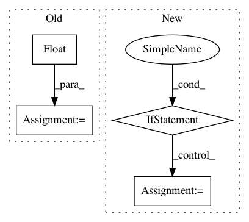

45714e343f36292cec938dc01ebb8a2dec10cea4,keras/preprocessing/image.py,ImageDataGenerator,flow,#ImageDataGenerator#Any#Any#Any#Any#Any#Any#Any#Any#,142
Before Change
np.random.seed(seed)
np.random.shuffle(y)
nb_batch = int(math.ceil(float(X.shape[0])/batch_size))
for b in range(nb_batch):
batch_end = (b+1)*batch_size
if batch_end > X.shape[0]:
nb_samples = X.shape[0] - b*batch_size
else:
nb_samples = batch_size
bX = np.zeros(tuple([nb_samples]+list(X.shape)[1:]))
for i in range(nb_samples):
x = X[b*batch_size+i]
x = self.random_transform(x.astype("float32"))
x = self.standardize(x)
bX[i] = x
if save_to_dir:
for i in range(nb_samples):
img = array_to_img(bX[i], scale=True)
img.save(save_to_dir + "/" + save_prefix + "_" + str(i) + "." + save_format)
yield bX, y[b*batch_size:b*batch_size+nb_samples]
def standardize(self, x):
if self.featurewise_center:
x -= self.mean
if self.featurewise_std_normalization:
After Change
for i in range(current_batch_size):
img = array_to_img(bX[i], scale=True)
img.save(save_to_dir + "/" + save_prefix + "_" + str(i) + "." + save_format)
if current_batch_size == batch_size:
b += 1
else:
b = 0
yield bX, y[current_index: current_index + batch_size]
def standardize(self, x):
if self.featurewise_center:
In pattern: SUPERPATTERN
Frequency: 3
Non-data size: 4
Instances
Project Name: keras-team/keras
Commit Name: 45714e343f36292cec938dc01ebb8a2dec10cea4
Time: 2016-01-19
Author: francois.chollet@gmail.com
File Name: keras/preprocessing/image.py
Class Name: ImageDataGenerator
Method Name: flow
Project Name: chainer/chainercv
Commit Name: 2eb0b6e398af59d0179a0adb95c57d27e0113f2d
Time: 2019-03-27
Author: shingogo@hotmail.co.jp
File Name: chainercv/functions/ps_roi_average_align_2d.py
Class Name:
Method Name: _get_bounds
Project Name: catalyst-team/catalyst
Commit Name: aab3902d4a7d55f5a86058854adc36b8a12c873f
Time: 2019-05-20
Author: ekhvedchenya@gmail.com
File Name: catalyst/dl/callbacks/base.py
Class Name: OptimizerCallback
Method Name: on_batch_end